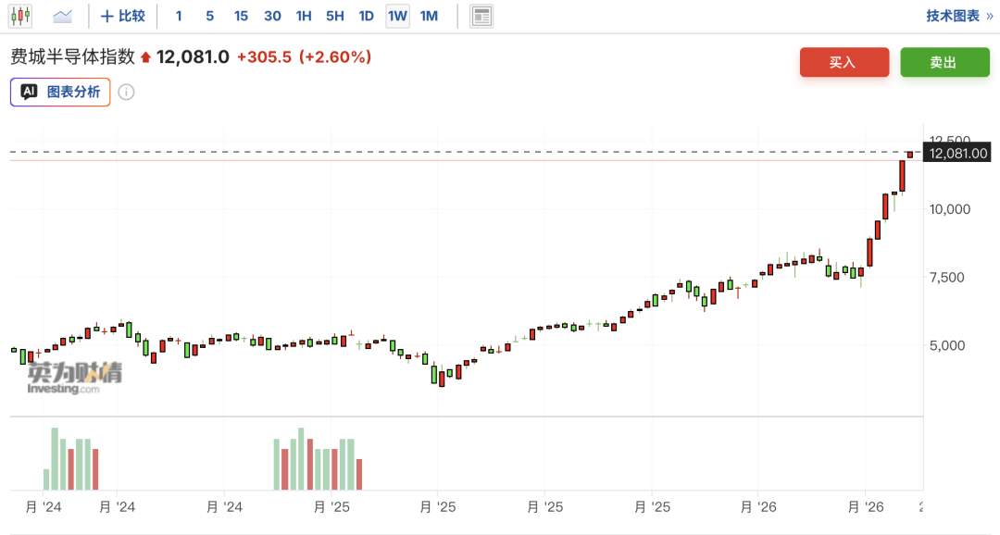

📈 大空头警告美股或将崩盘，大多头却称标普再涨12%，高盛合伙人：喊顶是徒劳，拥抱泡沫
Big Short's Burry warns of crash, Yardeni sees S&P 12% upside, Goldman: embrace the bubble
强劲的企业盈利表现之下，标普500指数与纳指一同续创新高，市场关于“2000年互联网泡沫是否重现”的争论argue[ˈɑrgju] v. 争论，辩论；提出理由又起。
《大空头》主角原型Michael Burry发出市场崩溃预警，称科技股的"抛物线式"飙升正将科技股估值推至难以为继的高位，当前走势与2000年互联网泡沫破裂前夕高度altitude[ˈæltɪtjuːd] n. 高度， 海拔吻合，纳斯达克100指数面临大幅下跌风险。
而华尔街资深投资策略师Ed Yardeni则大幅上调了对美国股市的预测，其对标普500指数的年底目标价从7700点上调至8250点，这一目标价较上周五的收盘水平有近12%的上涨空间，并在三年后站上10000点大关，这也是彭博社追踪的所有策略师中最为乐观的optimistic[ˌɒptɪˈmɪstɪk] adj. 乐观的；乐观主义的预测。
Yardeni并非唯一上调股市基准目标objective[əˈbʤɛktɪv] n. 目标,目的的策略师。汇丰控股策略师Nicole Inui和Alastair Pinder将标普500指数年底目标价从7500点上调至7650点，也认为标普500指数有突破8000点的潜力，理由allege[əˈlɛʤ] v. 宣称，断言；提出…作为理由同样是强劲的盈利表现以及科技股的回归。
高盛合伙人Rich Privorotsky在最新客户correspondent[ˌkɔrəˈspɑndənt] n. 通讯记者；客户；通信者；代理商行报告中直言，当前美股价格走势“有几分2000年的味道”，但这一轮行情背后的盈利基本面远比当年扎实。他的结论颇为耐人寻味：在泡沫bubble[ˈbəbəl] n. 气泡，泡沫，泡状物；透明圆形罩，圆形顶形成阶段，"喊顶是徒劳之举"，投资者或许更应顺势做多，拥抱这一过程。

Burry在其Substack专栏中写道，当前市场走势与互联网泡沫破裂前夕的顶峰形态高度相似，并将目光尤其指向芯片股——费城半导体semiconductor[ˌsɛmɪkənˈdəktər] n. 半导体指数自3月底以来已累计上涨近70%。

他指出，纳斯达克100指数的实际市盈率高达43倍，远超华尔街给出的约30倍的隐含水平，原因在于consist[kənˈsɪst] v. (in)在于；(of)由…组成,由…构成"华尔街可能将增长最快、估值最高的公司的盈利高估了逾50%"。
Burry写道，"我们正在见证历史。在股票市场中，这不是一件好事，现在就像血腥车祸现场，就在事故发生contemporary[kənˈtɛmpərˌɛri] adj. 现代的,当代的；发生[存在]于同一时代的前几分钟"。
Bespoke Investment Group的数据显示，费城半导体指数当前偏离200日均线的幅度，此前在历史上仅出现arise[əraɪz] v. 出现；上升；起立过两次——分别是1995年7月和2000年3月，后者恰好发生在互联网泡沫崩溃之前。
Burry表示，他持有“市场大量杠杆做空”的股票组合，这些股票被他认为“估值过低且便宜”，但他并未详细说明specify[ˈspɛsəˌfaɪ] v. 指定,详细说明。他还计划“减持”那些不符合accord[əˈkɔrd] n. 一致， 符合；协议， 条约他“严格估值要求”的公司。
对于普通投资者，Burry的建议advise[ədˈvaɪz] v. 忠告，劝告，建议；通知，告知是：从近期涨势中获利了结，并整体降低股票仓位，尤其是科技板块的敞口。
Burry在文中直言，即便市场看似仍有上行空间，那些乘着本轮抛物线式行情的投资者，若不选择离场，实际上是在赌自己能够在顶部或接近approximate[əˈprɑksəˌmeɪt] v. (to)接近顶部时精准出手。
"历史告诉我们，即便派对再持续一周、一个月、三个月乃至一年，最终的结果haul[hɔl] n. 拖，拉；用力拖拉；努力得到的结果；捕获物；一网捕获的鱼量；拖运距离将是大幅更低的价格，"他写道。"我们正在进入那种罕见的peculiar[pɪˈkjuljər] adj. 特殊的；独特的；奇怪的；罕见的极端状态，其后果将无可避免，无论躲到哪里都无从幸免。"

一季度强劲的财报表现behave[bɪˈheɪv] v. 表现；（机器等）运转；举止端正；（事物）起某种作用是促使Yardeni Research首席投资策略师Ed Yardeni上调预测的核心动力。
当前标普500指数的盈利惊喜幅度breadth[brɛdθ] n. 宽度，幅度；宽宏已达17.8%，为近两年最高水平；纳斯达克100指数exponential[ˌekspəˈnenʃl] adj. 指数的盈利惊喜幅度更高达29%。
除了将今年底的目标价上调至8250点，他还同步上调了标普500指数的每股收益（EPS）预期，将今年的EPS预测calculate[ˈkælkjəˌleɪt] v. 计算,推算；预测，估计从310美元上调至330美元，将2027年的预测从350美元上调至375美元。
Yardeni指出，随着市场共识consensus[kənˈsɛnsəs] n. (意见等的)一致，一致同意，共识预期已经“远超我们此前的目标”，他先前的预测已不足以反映当前的看涨情绪。他在周日发布的一份报告中写道，近几个月来，今明两年的共识盈利预期上升ascend[əˈsɛnd] v. 上升；登高；追溯速度前所未见，这直接导致了由盈利主导的股市融涨。
在这一基本面支撑下，Yardeni对本轮牛市的延续充满abound[əˈbaʊnd] v. 富于；充满信心，并预计他所称的“咆哮的二十年代（roaring 2020s）”将以高点收官。他维持了标普500指数在2029年底前达到10000点的长期目标，并补充称该目标“可能会提前实现accomplish[əˈkɑmplɪʃ] v. 完成；实现；达到”。

高盛合伙人Privorotsky发出警告alarm[əˈlɑrm] v. 警告；使惊恐，当前科技股与半导体的狂飙行情“有几分2000年的味道”，但他的结论却出人意料——在泡沫尚未刺破前，喊顶是徒劳之举，顺势做多或许才是正解。
Privorotsky表示bid[bɪd] v. 投标；出价；表示；吩咐，他对AI代理化进程带动长期算力需求的大方向并无异议，但他更关注的问题是：算力最终将落在哪里，以及边际算力成本将如何演变。
他指出，开源模型已在基础编程等任务上快速抢占市场份额，成本敏感型用户正呈现出明显的conspicuous[kənˈspɪkjuəs] adj. 显眼的,明显的降本趋势，而较小的模型已能在本地CPU上流畅运行以处理低价值任务。如果模型压缩capsule[ˈkæpsəl] v. 压缩；简述技术持续进步，半导体行业真正需要回答的问题，将不再是算力需求能否增长，而是有多少需求会向更廉价的分布式算力迁移——届时供给或许真的能够追上需求。
尽管如此nonetheless[ˌnənðəˈlɛs] adv. 尽管如此，但是，在泡沫尚未刺破之前，市场的逻辑自有其惯性。Privorotsky坦言，作为一个惯于逆向思考的怀疑论者，他无法不去想象可能出错的地方，但他也承认acknowledge[ækˈnɑlɪʤ] v. 承认；答谢；报偿；告知已收到，在当前的市场结构下，与趋势对抗的代价极为高昂。
CFRA Research的Stovall指出，标普500指数的14天相对强弱指数（RSI）目前处于75，高于暗示资产超买的70临界值threshold[ˈθreʃhəʊld] n. 入口；门槛；开始；极限；临界值。这意味着spell[spɛl] v. 拼，拼写；意味着；招致；拼成；迷住；轮值该指数可能需要暂作喘息。
过热信号不仅限于基准指数。纳斯达克100指数，以及标普500指数中的信息技术和通信服convince[kənˈvɪns] v. 说服；使确信，使信服务子指数均出现了超买信号。此外，在更广泛的comprehensive[ˌkɑmpriˈhɛnsɪv] adj. 综合的；广泛的；有理解力的标普1500指数的155个子行业中，有9%也发出了超买信号。
尽管如此，华尔街对回调的看法judgment[ˈdʒʌdʒmənt] n. 审判， 判决；判断力， 识别力； 看法， 意见依然偏向积极。自2月下旬因地缘政治冲击引发连续五周的抛售以来，美股已在盈利和中东局势预期改善amend[əˈmɛnd] v. 修改；改善，改进的推动下扭转颓势，创下了自2024年10月以来最长的连续六周上涨纪录。
Stovall在周一的报告中表示，消化assimilate[əˈsɪməˌleɪt] v. 吸收，消化；被吸收；被同化近期的涨幅将为多头提供“逢低买入”并恢复上涨趋势的机会。
尽管股市目前对地缘局势的反应相对钝化，但中东地区持续的continuous[kənˈtɪnjuəs] adj. 连续的,持续的敌对行动仍是威胁股市反弹的关键风险之一。目前，华盛顿和德黑兰尚未就结束战争达成一致accordance[əˈkɔrdəns] n. 一致；和谐，美国总统特朗普表示，美伊停火协议处于脆弱状态，“正依靠生命维持系统存活”。
Yardeni警告alert[əˈlərt] v. 警告；使警觉，使意识到称，如果爆发新一轮冲突，“情况可能会变得更加棘手”，因为这可能导致经济陷入滞胀，从而对当前的股市融涨构成实质性威胁。
本文不构成个人投资建议，不代表ambassador[æmˈbæsədər] n. 大使；特使，(派驻国际组织的)代表平台观点，市场有风险，投资需谨慎，请独立判断和决策。